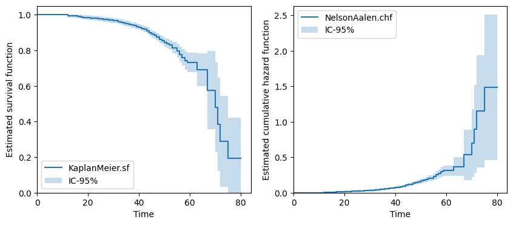

Lifetime models#
[1]:
import numpy as np
import matplotlib.pyplot as plt
from relife.data import load_circuit_breaker
Here is a toy datasets that contains the following 15 first data
[2]:
data = load_circuit_breaker()
print(data["time"])
print(data["event"])
print(data["entry"])
[34. 28. 12. ... 42. 42. 37.]
[ True True True ... False False False]
[33. 27. 11. ... 31. 31. 26.]
Non parametric lifetime models#
[3]:
from relife.lifetime_model import KaplanMeier, NelsonAalen
[4]:
km = KaplanMeier()
km.fit(data["time"], event=data["event"], entry=data["entry"])
na = NelsonAalen()
na.fit(data["time"], event=data["event"], entry=data["entry"])
[4]:
<relife.lifetime_model.non_parametric.NelsonAalen at 0x770c2b0d5f50>
[5]:
fig, axs = plt.subplots(ncols=2, nrows=1, figsize=(10, 4))
km.plot.sf(ax=axs[0])
na.plot.chf(ax=axs[1])
plt.show()

Lifetime distribution models#
[6]:
from relife.lifetime_model import Weibull, Gompertz
Here is a toy datasets that contains the following 15 first data
One can instanciate a Weibull distribution model as follow
[7]:
weibull = Weibull()
gompertz = Gompertz()
From now, the models parameters are unknown, thus set to np.nan
[8]:
print(weibull.params_names)
print(weibull.params)
('shape', 'rate')
[nan nan]
One can fit the model. You can either return a new fitted instance or fit the model inplace
[9]:
weibull.fit(data["time"], event=data["event"], entry=data["entry"])
print(weibull.fitting_results)
fitted params : [3.72675, 0.0123233]
AIC : 2493.72
AICc : 2493.72
BIC : 2506.41
[10]:
gompertz.fit(data["time"], event=data["event"], entry=data["entry"])
print(gompertz.fitting_results)
fitted params : [0.00390781, 0.0757955]
AIC : 2485.57
AICc : 2485.57
BIC : 2498.25
To plot the survival function, do the following
[11]:
weibull.plot.sf()
gompertz.plot.sf()
km.plot.sf()
plt.show()

Lifetime regression models#
[12]:
import numpy as np
from relife.lifetime_model import ProportionalHazard, Weibull, Gompertz
from relife.data import load_insulator_string
[13]:
data = load_insulator_string()
print(data.dtype.names)
('time', 'event', 'entry', 'pHCl', 'pH2SO4', 'HNO3')
[14]:
print(data["pHCl"])
[0.49 0.76 0.43 ... 1.12 1.19 0.35]
[15]:
covar = np.column_stack((data["pHCl"], data["pH2SO4"], data["HNO3"]))
print(covar.shape)
(12000, 3)
[16]:
ph = ProportionalHazard(Gompertz())
ph.fit(data["time"], covar, event=data["event"], entry=data["entry"])
[16]:
<relife.lifetime_model.regression.ProportionalHazard at 0x770bfde18bd0>
[17]:
print(ph.params, ph.params_names)
[ 4.11139839 -2.67864095 3.24298564 0.22415155 0.02944536] ('coef_1', 'coef_2', 'coef_3', 'shape', 'rate')
[18]:
# plot hazard function for some individuals
i, j, k = 12, 1073, 7999
ph.plot.hf(covar[i], end_time=200, label=f"hf {i}-th asset")
ph.plot.hf(covar[j], end_time=200, label=f"hf {j}-th asset")
ph.plot.hf(covar[k], end_time=200, label=f"hf {k}-th asset")
[18]:
<Axes: title={'center': 'Hazard function'}, xlabel='t', ylabel='$h(t)$'>

[19]:
# plot hazard function for some individuals
i, j, k = 12, 1073, 7999
ph.plot.sf(covar[i], end_time=200, label=f"hf {i}-th asset")
ph.plot.sf(covar[j], end_time=200, label=f"hf {j}-th asset")
ph.plot.sf(covar[k], end_time=200, label=f"hf {k}-th asset")
[19]:
<Axes: title={'center': 'Survival function'}, xlabel='t', ylabel='$S(t) = P(T > t)$'>